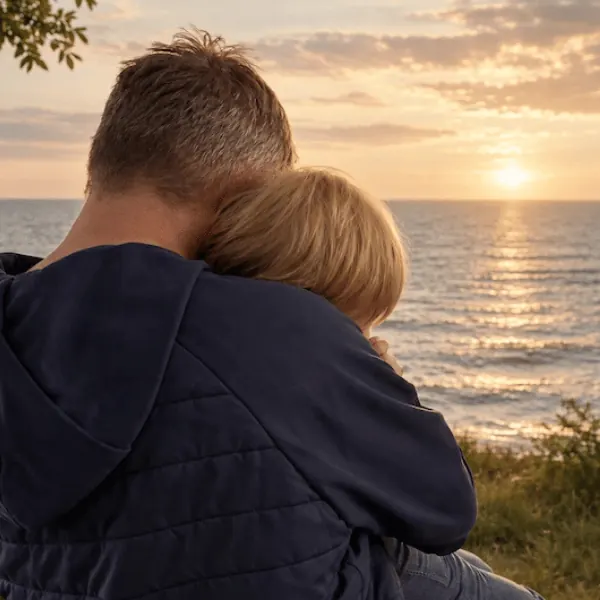

Fra mistrivsel til trivsel
Vejen hjem fra mistrivsel
Hvad forsøger barnets reaktioner at fortælle os? Vi undersøger, hvad der sker, når mistrivsel ses som et problem i barnet frem for et signal om, at noget omkring barnet skal forandres. Du får indsigt og redskaber til at skabe tryghed og trivsel.
Læs om foredraget